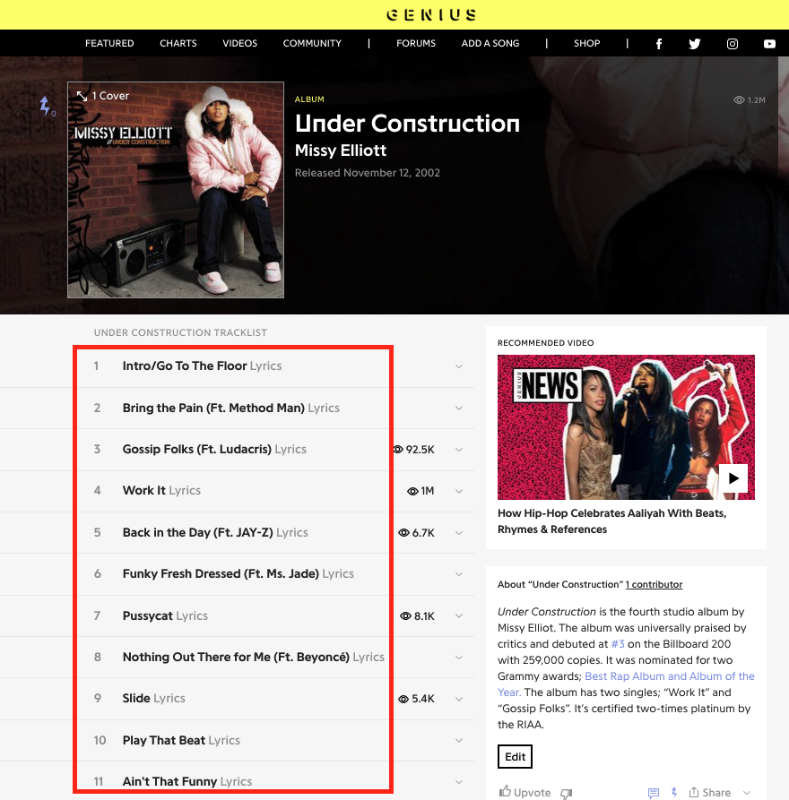

import requests
from bs4 import BeautifulSoup27 Web Scraping — Part 2
In this lesson, we’re going to learn more about scraping data with the Python libraries requests and BeautifulSoup. We’re also going to introduce regular expressions, which will help us extract and clean data in a more fine-grained way.
We will cover how to:
- Programmatically access the text of a web page
- Extract certain HTML elements
- Extract and clean data with regular expressions
Our goal for this lesson is to build a web scraping function called get_all_songs_from_album which will get all the song titles from any album on Genius.com.
Import Requests and BeautifulSoup
We’re again going to use the requests library and the BeautifulSoup library to scrape our list of album songs.

The first album that we’re going to scrape is Missy Elliott’s “Under Construction” (2002), which debuted at No. 3 on The Billboard Top 200 charts.
from IPython.display import IFrame
IFrame("https://www.youtube.com/embed/cjIvu7e6Wq8?start=31", width='500', height='400')Get HTML Data and Extract Text
response = requests.get("https://genius.com/albums/Missy-elliott/Under-construction")
html_string = response.textTransform into BeautifulSoup Document
document = BeautifulSoup(html_string, "html.parser")Your Turn!
We want to extract just the song titles from Missy Elliott’s album “Under Construction.” Turn on your web browser’s “Inspect” function and find the HTML tag associated with each song title.
https://genius.com/albums/Missy-elliott/Under-construction
Select “Click to show” to see the answer.
song_title_tags = document.find_all("h3")
song_title_tags[<h3 class="chart_row-content-title">
Intro/Go To The Floor
<span class="chart_row-content-title-subtitle">Lyrics</span>
</h3>,
<h3 class="chart_row-content-title">
Bring the Pain (Ft. Method Man)
<span class="chart_row-content-title-subtitle">Lyrics</span>
</h3>,
<h3 class="chart_row-content-title">
Gossip Folks (Ft. Ludacris)
<span class="chart_row-content-title-subtitle">Lyrics</span>
</h3>,
<h3 class="chart_row-content-title">
Work It
<span class="chart_row-content-title-subtitle">Lyrics</span>
</h3>,
<h3 class="chart_row-content-title">
Back in the Day (Ft. JAY-Z)
<span class="chart_row-content-title-subtitle">Lyrics</span>
</h3>,
<h3 class="chart_row-content-title">
Funky Fresh Dressed (Ft. Ms. Jade)
<span class="chart_row-content-title-subtitle">Lyrics</span>
</h3>,
<h3 class="chart_row-content-title">
Pussycat
<span class="chart_row-content-title-subtitle">Lyrics</span>
</h3>,
<h3 class="chart_row-content-title">
Nothing Out There for Me (Ft. Beyoncé)
<span class="chart_row-content-title-subtitle">Lyrics</span>
</h3>,
<h3 class="chart_row-content-title">
Slide
<span class="chart_row-content-title-subtitle">Lyrics</span>
</h3>,
<h3 class="chart_row-content-title">
Play That Beat
<span class="chart_row-content-title-subtitle">Lyrics</span>
</h3>,
<h3 class="chart_row-content-title">
Ain't That Funny
<span class="chart_row-content-title-subtitle">Lyrics</span>
</h3>,
<h3 class="chart_row-content-title">
Hot
<span class="chart_row-content-title-subtitle">Lyrics</span>
</h3>,
<h3 class="chart_row-content-title">
Can You Hear Me (Ft. TLC)
<span class="chart_row-content-title-subtitle">Lyrics</span>
</h3>,
<h3 class="chart_row-content-title">
Work It (Remix) (Ft. 50 Cent)
<span class="chart_row-content-title-subtitle">Lyrics</span>
</h3>,
<h3 class="annotation_label">Does this album have any certifications?</h3>,
<h3 class="annotation_label">How did this album chart?</h3>,
<h3>ICONOLOGY</h3>,
<h3>Misdemeanor</h3>]Now write a for loop that extracts the text from each song title tag and .appends() it to a list called song_titles:
song_titles = []
for song in song_title_tags:
song_title_missy = song.text
song_titles.append(song_title_missy)song_titles['\n Intro/Go To The Floor\n Lyrics\n',
'\n Bring the Pain (Ft.\xa0Method\xa0Man)\n Lyrics\n',
'\n Gossip Folks (Ft.\xa0Ludacris)\n Lyrics\n',
'\n Work It\n Lyrics\n',
'\n Back in the Day (Ft.\xa0JAY-Z)\n Lyrics\n',
'\n Funky Fresh Dressed (Ft.\xa0Ms.\xa0Jade)\n Lyrics\n',
'\n Pussycat\n Lyrics\n',
'\n Nothing Out There for Me (Ft.\xa0Beyoncé)\n Lyrics\n',
'\n Slide\n Lyrics\n',
'\n Play That Beat\n Lyrics\n',
"\n Ain't That Funny\n Lyrics\n",
'\n Hot\n Lyrics\n',
'\n Can You Hear Me (Ft.\xa0TLC)\n Lyrics\n',
'\n Work It (Remix) (Ft.\xa050\xa0Cent)\n Lyrics\n',
'Does this album have any certifications?',
'How did this album chart?',
'ICONOLOGY',
'Misdemeanor']Now transform that same for loop into a list comprehension.
missy_song_titles = [song.text for song in song_title_tags]missy_song_titles['\n Intro/Go To The Floor\n Lyrics\n',
'\n Bring the Pain (Ft.\xa0Method\xa0Man)\n Lyrics\n',
'\n Gossip Folks (Ft.\xa0Ludacris)\n Lyrics\n',
'\n Work It\n Lyrics\n',
'\n Back in the Day (Ft.\xa0JAY-Z)\n Lyrics\n',
'\n Funky Fresh Dressed (Ft.\xa0Ms.\xa0Jade)\n Lyrics\n',
'\n Pussycat\n Lyrics\n',
'\n Nothing Out There for Me (Ft.\xa0Beyoncé)\n Lyrics\n',
'\n Slide\n Lyrics\n',
'\n Play That Beat\n Lyrics\n',
"\n Ain't That Funny\n Lyrics\n",
'\n Hot\n Lyrics\n',
'\n Can You Hear Me (Ft.\xa0TLC)\n Lyrics\n',
'\n Work It (Remix) (Ft.\xa050\xa0Cent)\n Lyrics\n',
'Does this album have any certifications?',
'How did this album chart?',
'ICONOLOGY',
'Misdemeanor']Are there things in your list that aren’t song titles? If so, use .find_all() with more specific HTML attributes attrs={}
song_title_tags = document.find_all("h3", attrs={"class": "chart_row-content-title"}) missy_song_titles['\n Intro/Go To The Floor\n Lyrics\n',
'\n Bring the Pain (Ft.\xa0Method\xa0Man)\n Lyrics\n',
'\n Gossip Folks (Ft.\xa0Ludacris)\n Lyrics\n',
'\n Work It\n Lyrics\n',
'\n Back in the Day (Ft.\xa0JAY-Z)\n Lyrics\n',
'\n Funky Fresh Dressed (Ft.\xa0Ms.\xa0Jade)\n Lyrics\n',
'\n Pussycat\n Lyrics\n',
'\n Nothing Out There for Me (Ft.\xa0Beyoncé)\n Lyrics\n',
'\n Slide\n Lyrics\n',
'\n Play That Beat\n Lyrics\n',
"\n Ain't That Funny\n Lyrics\n",
'\n Hot\n Lyrics\n',
'\n Can You Hear Me (Ft.\xa0TLC)\n Lyrics\n',
'\n Work It (Remix) (Ft.\xa050\xa0Cent)\n Lyrics\n',
'\n Pepsi Super Bowl XLIX Halftime Show by\xa0NFL (Ft.\xa0Katy\xa0Perry, Lenny\xa0Kravitz & Missy\xa0Elliott)\n Lyrics\n']27.1 Regular Expressions
Great! Now we have have our list of song titles from Missy Elliot’s album “Under Construction.” But if you notice, these song titles are pretty messy, and we need to clean them up.
To do so, we’re going to use built-in string methods and a Python library called re, short for regular expressions.
Regular expressions are basically like a very sophisticated find-and-replace. Regular expression are not exclusive to Python and are used in many programming languages as well as in search engines, text editors, and word processors.
27.1.1 Import Regular Expressions Library
import reTo practice with regular expressions, we’re going to use a sample messy song title from our messy song titles list.
sample_song = "\n Back in the Day (Ft.\xa0JAY-Z)\n Lyrics\n"Replace with Python String Method
Remember the string method .replace()? With this built-in string method, we can easily get rid of the new line characters \n or the word “Lyrics” from our sample_song, which is very useful.
sample_song.replace("\n", "")' Back in the Day (Ft.\xa0JAY-Z) Lyrics'sample_song.replace("Lyrics", "")'\n Back in the Day (Ft.\xa0JAY-Z)\n \n'27.1.2 Replace with Regex
However, with regular expressions, we can replace strings with even more power and flexibility.
To replace a string with regular expressions, we use re.sub(old_pattern, new_pattern, text_that_contains_pattern). We can do exactly the same thing that we did with the built-in string method .replace().
sample_song'\n Back in the Day (Ft.\xa0JAY-Z)\n Lyrics\n're.sub("\n", "", sample_song)' Back in the Day (Ft.\xa0JAY-Z) Lyrics'27.2 Special RegEx Characters
But regular expressions have certain characters with special pattern-matching powers, which is what allows us to do more cleaning, manipulating, and searching than with basic string methods. Below are some of the special regular expression characters.
| Regular Expression Pattern | Matches |
|---|---|
. |
any character |
\w |
word |
\W |
NOT word |
\d |
digit |
\D |
NOT digit |
\s |
whitespace |
\S |
NOT whitespace |
[abc] |
Any of abc |
[^abc] |
Not any of abc |
(abc) |
Specific capture of “abc” |
+ |
1 or more instances |
* |
0 or more instances |
? |
0 or 1 instance |
You can explore and experiment with regular expression characters and combinations at Regexr.com.
We can replace anything that is not a word \W with ” “:
re.sub("\W", " ", sample_song)' Back in the Day Ft JAY Z Lyrics 'Replace anything that is a word \w with ” “:
re.sub("\w", " ", sample_song)'\n ( .\xa0 - )\n \n'The character + means “match one or more instance” of the pattern, which allows us to remove multiple not word patterns in a row.
re.sub("\W+", " ", sample_song)' Back in the Day Ft JAY Z Lyrics '27.3 Compile Pattern
An efficient way to build and save a regular expression pattern is with re.compile()
not_word_pattern = re.compile("\W+")
re.sub(not_word_pattern, " ", sample_song)' Back in the Day Ft JAY Z Lyrics '27.4 Search for Pattern
In addition to replacing text, we can also find and return text. With re.search(), we can find and return any particular pattern. The re.search() function returns something called a “match object,” which we can access with .group().
For example, searching with the pattern \w+ will return the very first word in sample_song:
word_pattern = re.compile("\w+")
word_pattern.search(sample_song)<re.Match object; span=(15, 19), match='Back'>word_pattern.search(sample_song).group(0)'Back'27.5 Find All Instances of Pattern
The function re.findall() will return a list of every instance of a particular pattern.
word_pattern = re.compile("\w+")
word_pattern.findall(sample_song)['Back', 'in', 'the', 'Day', 'Ft', 'JAY', 'Z', 'Lyrics']When you combine special regular expression characters, you can make your pattern matching very specific and very powerful. If we had a document that contains a bunch of email addresses, we could use the pattern [\w.]+@[\w.]+ to find and extract the words that appear on other side of the @ character, aka find and extract all the email addresses.
text_with_emails = "The important email addresses are important@cool.com, signficant@sweet.org"
extracted_emails = re.findall('[\w.]+@[\w.]+', text_with_emails)extracted_emails['important@cool.com', 'signficant@sweet.org']27.6 Match Before a Certain String
For our song titles, we might want to extract everything that comes before “(Ft.)” because we don’t care as much about the featured artists, and because the featured artists makes the song titles really long. To match everything that comes before a certain string, we can use the pattern .*(?=desired_pattern) which matches 0 or more * of any character . that comes before (?=) the string “desired_pattern.”
before_ft_pattern = re.compile(".*(?=Ft)")
before_ft_pattern.search(sample_song).group(0)' Back in the Day ('27.7 Backslash Escape Characters
Nice! We got everything before the featured artist. Well, almost. We still have a weird, lingering open parentheses. That’s because we were matching “Ft” not “(Ft”. Let’s match everything before “(Ft” instead.
To do so, we’re going to have to make a slight adjustment. Remember that parentheses () are special regular expression characters. To make clear that we mean a literal parentheses and not a special regular expression character, we have to use an escape backslash \ before the character.
before_ft_pattern = re.compile(".*(?=\(Ft)")
clean_sample_song_title = before_ft_pattern.search(sample_song).group(0)
clean_sample_song_title ' Back in the Day '27.8 Strip Leading and Trailing Whitespace
The last thing we’ll do to clean up our song title is to use the built-in string method .strip() which strips leading and trailing whitespace.
clean_sample_song_title.strip()'Back in the Day'27.9 Build Functions and Put It All Together
Let’s put all this cleaning together in a function called clean_up. It will match and strip everything before “(Ft.)” if the song title contains a featured artist, and it will remove the word “Lyrics” and strip whitespace if the song title does not contain “(Ft.)”.
def clean_up(song_title):
if "Ft" in song_title:
before_ft_pattern = re.compile(".*(?=\(Ft)")
song_title_before_ft = before_ft_pattern.search(song_title).group(0)
clean_song_title = song_title_before_ft.strip()
else:
song_title_no_lyrics = song_title.replace("Lyrics", "")
clean_song_title = song_title_no_lyrics.strip()
return clean_song_title[clean_up(song) for song in missy_song_titles]['Intro/Go To The Floor',
'Bring the Pain',
'Gossip Folks',
'Work It',
'Back in the Day',
'Funky Fresh Dressed',
'Pussycat',
'Nothing Out There for Me',
'Slide',
'Play That Beat',
"Ain't That Funny",
'Hot',
'Can You Hear Me',
'Work It (Remix)',
'Pepsi Super Bowl XLIX Halftime Show by\xa0NFL']We were able to extract the song titles for Missy Elliott’s album “Under Construction.” Success! But now we want to make a function that can do the same thing for any artist and album title.
Take a look at Beyonce’s album “Lemonade” on Genius.com and see how the web page compares to Missy Elliott’s “Under Construction.” They look extremely similar, right? Because all Genius album pages are identical, we can use the same code that we did for Missy Elliott and just substitute in different artist and album names with an f-string for the Genius URL:
f"https://genius.com/albums/{artist}/{album_name}"
def get_all_songs_from_album(artist, album_name):
artist = artist.replace(" ", "-")
album_name = album_name.replace(" ", "-")
response = requests.get(f"https://genius.com/albums/{artist}/{album_name}")
html_string = response.text
document = BeautifulSoup(html_string, "html.parser")
song_title_tags = document.find_all("h3", attrs={"class": "chart_row-content-title"})
song_titles = [song_title.text for song_title in song_title_tags]
clean_songs = []
for song_title in song_titles:
clean_song = clean_up(song_title)
clean_songs.append(clean_song)
return clean_songsget_all_songs_from_album('Beyonce', 'Lemonade')['Pray You Catch Me',
'Hold Up',
"Don't Hurt Yourself",
'Sorry',
'6 Inch',
'Daddy Lessons',
'Love Drought',
'Sandcastles',
'Forward',
'Freedom',
'All Night',
'Formation',
'Sorry (Original Demo)',
'Lemonade Film (Script)']get_all_songs_from_album('Taylor Swift', 'Red')['State of Grace',
'Red',
'Treacherous',
'I Knew You Were Trouble',
'All Too Well',
'22',
'I Almost Do',
'We Are Never Ever Getting Back Together',
'Stay Stay Stay',
'The Last Time',
'Holy Ground',
'Sad Beautiful Tragic',
'The Lucky One',
'Everything Has Changed',
'Starlight',
'Begin Again',
'I Knew You Were Trouble (Intro)']get_all_songs_from_album('Mitski', 'Be The Cowboy')['Geyser',
"Why Didn't You Stop Me?",
'Old Friend',
'A Pearl',
'Lonesome Love',
'Remember My Name',
'Me and My Husband',
'Come Into the Water',
'Nobody',
'Pink in the Night',
'A Horse Named Cold Air',
'Washing Machine Heart',
'Blue Light',
'Two Slow Dancers']27.10 Your Turn!
get_all_songs_from_album('#Your Choice of Artist', '#Your Choice of Album')If there is anything wrong, please open an issue on GitHub or email f.pianzola@rug.nl